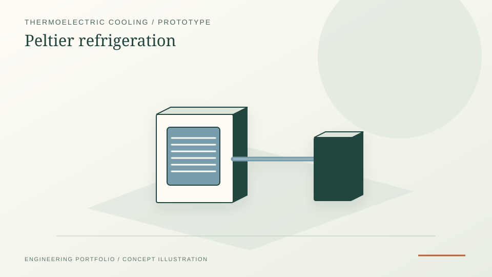

Bachelor design project on a thermoelectric refrigerator using the Peltier effect as a compact compressor-free cooling concept.
Thermoelectric cooling · Prototype design · Thermal hardware
Peltier Refrigerator
Bachelor design project on a compact, compressor-free refrigerator using the Peltier effect, framed here as early thermal-hardware evidence with clear discussion of the technology's efficiency limits.
Thermoelectric coolingTemperature sensingPrototype designDesign report

PROJECT REFERENCE / PELTIER-REFRIGERATORUseful as early evidence of thermal-hardware prototyping interest before later KTH heat-transfer and Siemens test-rig work.
Evidence dashboard
Thermoelectric cooling, with the limitations kept visible.
Technical question
Can a small refrigeration concept be designed around solid-state thermoelectric cooling instead of a compressor, refrigerant loop and moving mechanical assembly?
40 Ltarget volume
5 deg Ccooling target
-10 deg Cfreezer target
Hardware chain
The report documents TEC1-12706 Peltier modules, aluminium heat sinks, cooling fans, polyurethane insulation, an 18650 lithium-ion battery, PIC18F4520 control, LM35 temperature sensing and relay switching.
Peltier module
Heat sink and fan
Sensor and display
Relay control
Thermal path
The hot side was designed around forced air heat rejection while the cold side removed heat from the cooling compartment. The report states 6 modules, with 4 assigned to the cooling compartment and 2 to the freezer compartment.
TEC1-12706module type
6modules
0.6057reported COP
Limitations
The report explicitly recognises the core limitation: thermoelectric cooling is compact, quiet and mechanically simple, but its COP is far below domestic vapour-compression refrigerators. That trade-off is the useful engineering lesson.
Low COP
Heat rejection bottleneck
Small-load applications
Engineering relevance
This project sits early in the portfolio because it is not a mature product design. Its value is that it shows the first version of a theme that became much stronger later: thermal hardware, heat rejection, sensing and the difference between an attractive concept and a physically efficient system.
The report connects the Peltier effect to practical component choices: the module moves heat from one ceramic face to the other under DC current, so the hot side must be aggressively cooled for the cold side to remain useful.
Report-backed details
- The TEC1-12706 module is described as a 40 x 40 x 3.9 mm device with 127 thermoelectric couples.
- The report states 15 V DC, 6 A operation for a 50 deg C temperature difference at a 50 deg C hot-side condition.
- Polyurethane insulation of 3 cm and aluminium sheet inner insulation of 0.2 cm are documented.
- LM35 sensors were used for cooling and freezer chambers, with 0.01 V/deg C scale factor.
- The conclusion identifies thermoelectric material, heat-sink design and irreversibility reduction as areas for further research.